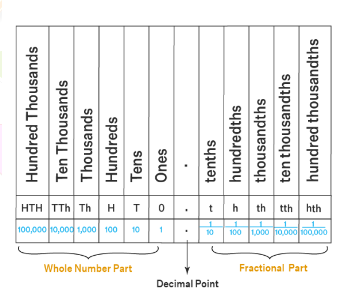

What are Decimals?
In Algebra, decimals are one of the types of numbers, which has a whole number and the fractional part separated by a decimal point. The dot present between the whole number and fractions part is called the decimal point. For example, 34.5 is a decimal number.
Here, 34 is a whole number part and 5 is the fractional part.
“.” is the decimal point.
Decimal Place Value
The decimal place value chart shows the place value of decimal numbers. We know that place value is the numerical value represented by a digit in a number. Therefore, just like the other place value charts, decimal place value charts are used to identify the correct position of all the digits in a decimal number. This chart indicates the place value of the digits that are given before the decimal point and after the decimal point.
Decimal Place Value Definition
A decimal number is made up of a whole number and a fractional part that is separated by a dot called the decimal point. For example, 4.37 is a decimal number in which 4 is the whole number part and .37 is the fractional part.
The digits before the decimal point represent the usual place values like ones, tens, hundreds, thousands, and so on. Whereas the digits after the decimal point represent place value starting from tenths, followed by hundredths, then thousandths, and so on.

Example: Write the place values of all the digits in the given number: 673.258
Solution: 6 comes under the hundreds column, therefore, the place value of 6 is 6 hundreds, or 6 × 100 = 600
7 comes under the tens column, therefore, the place value of 7 is 7 tens, or 7 × 10 = 70
3 comes under the ones column, therefore, the place value of 3 is 3 ones, or 3 × 1 = 3
2 comes under the tenths column, therefore, the place value of 2 is 2 tenths, or 2/10 = 0.2
5 comes under the hundredths column, therefore, the place value of 5 is 5 hundredths, or 5/100 = 0.05
8 comes under the thousandths column, therefore, the place value of 8 is 8 thousandths, or 8/1000 = 0.008.
Reading Decimal Numbers:
There are two ways to read a decimal number. The first way is to simply read the whole number followed by "point", and then read the digits in the fractional part separately. It is a more casual way to read decimals.
For example, we read 85.64 as eighty-five point six-four. The second way is to read the whole number part followed by "and", and then read the fractional part in the same way as we read whole numbers but followed by the place value of the last digit.
For example, we can also read 85.64 as eighty-five and sixty-four hundredths.
Convert Decimal to Fraction
- Step 1- Identify the place value of the digits after the decimal, in the number.
- Step 2- Use that to determine what the denominator of the fraction would be.
- Step 3- Remove the decimal point. Re-write in the fraction form and simplify it.
- Step 4- Express in terms of the lowest Equivalent fraction.
Let us look at an example to understand these steps.
Example: Convert 0.5 into a fraction.
Solution: Let's apply the steps that we learned.
Step 1: Identify the place value of the last digit.
0.5 → 5 is in the tenths place. (0.5 indicates 0.50)
Step 2: The denominator would be 10
Step 3: Fraction format: Numerator/Denominator = 5/10
Step 4: Simplest Form: 1/2
Thus, 0.5=5/10=1/2.
Convert Decimal to Fraction
Procedure to convert decimal to fraction:
- Identify the place value of the last digit in the number.
- Use that to determine what the denominator of the fraction would be.
- Remove the decimal point. Re-write in the fraction form and simplify it.
- Express in terms of the lowest Equivalent fraction.
For example, if we have to convert 6.25 to its fractional equivalent, it has 6 in the whole number part and 0.25 in the fractional part.
0.25 has two digits after the decimal point, so it can be written as 25/100 as a fraction, which can be reduced to 1/4.
Comparing Decimals
Comparing decimals means finding out the larger and the smaller decimal number in a given set of numbers.
Comparing decimals is similar to comparing other whole numbers in which we start comparing the digits with the greatest place value. We place the given decimal numbers in a place value chart and start the comparison. If the digits on the greatest place value are the same, we move on to the digits in the next place to the right. We keep comparing digits until we reach the digits that are different. Let us understand this with the help of the following example.
Example: Compare 0.64 and 0.362
- Step 1: Compare the whole number part, which is the ones digit. If the numbers are the same, go to the next step. In this case, the ones digits has 0 in both the numbers. So, we move on to the next place to the right.
- Step 2: Compare the tenths place, which is the place to the right of the decimal point. When we compare the value in the tenths place, we see that 6 is greater than 3. At this step itself, we get to know that 0.64 is greater than 0.362. Therefore, we do not need to move on to the hundredths digit for further comparison.
- Step 3: Hence, we conclude that 0.64 > 0.362